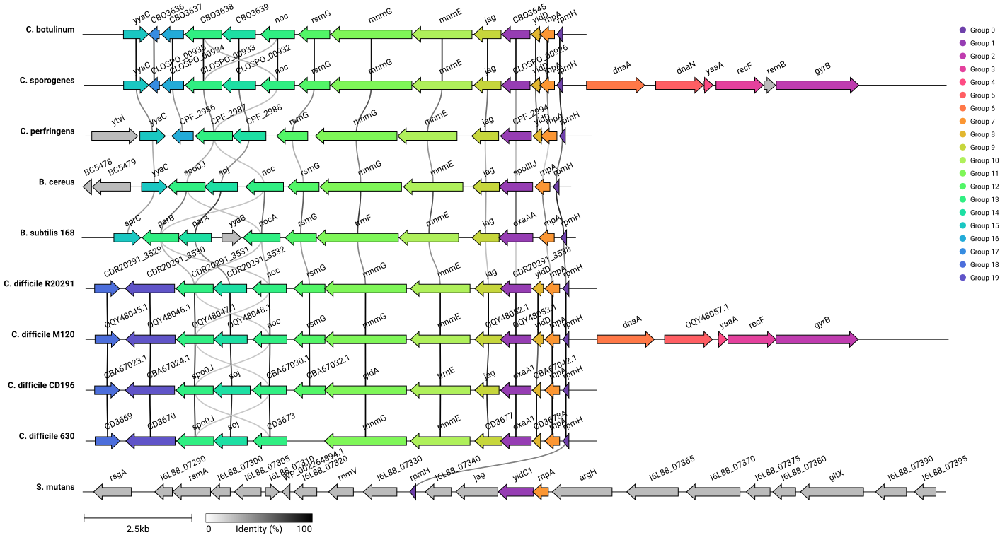

Research
Current Projects
My current work investigates two regulatory and membrane-associated pathways in C. difficile: the KhpB–YidC/OxaA1 membrane-biogenesis pathway, which contributes to membrane integrity, sporulation, antimicrobial susceptibility, and c-di-GMP-associated physiology; and the transcription factor SinR, which directly regulates genes involved in sporulation, motility, metabolism, and toxin-associated pathways. Both manuscripts are in preparation.
YidC Controls Virulence, Membrane Integrity, and c-di-GMP Signaling in C. difficile
Using CRISPRi-mediated silencing of the conserved membrane protein insertase YidC, I have demonstrated its role in governing toxin secretion, biofilm formation, and intracellular c-di-GMP levels — connecting membrane biogenesis to second messenger-dependent virulence circuits for the first time in this pathogen.

Genome-Wide Mapping of the SinR Regulon Reveals Novel Targets and Direct Autoregulation
ChIP-seq and RNA-seq analysis of the master transcription factor SinR substantially expands its known regulon — revealing direct binding at the binary toxin locus, flagellar genes, and glycogen metabolism operons, as well as SinR autoregulation validated by biochemical DNA-binding assays.